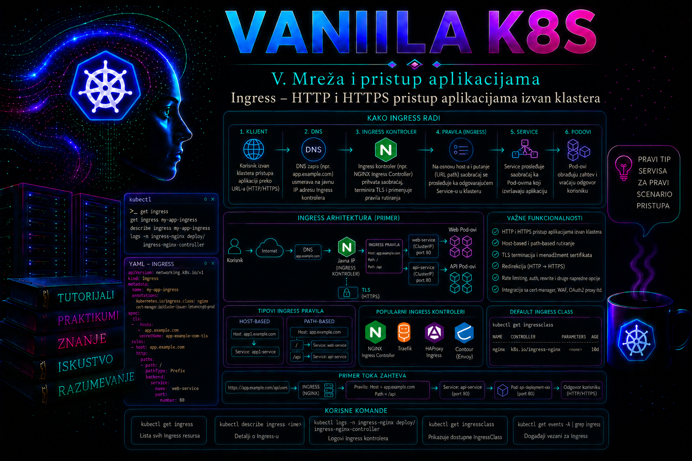

Vanilla Kubernetes

Kubernetes Service obezbeđuje stabilan mrežni pristup aplikaciji, ali sam po sebi ne rešava upravljanje većim brojem javnih HTTP i HTTPS ulaznih tačaka. Kada svaka aplikacija dobije zaseban Service tipa LoadBalancer ili poseban spoljašnji reverse proxy, raste broj IP adresa, listener-a, sertifikata, firewall pravila i mesta na kojima se kontroliše saobraćaj. Ingress uvodi deklarativni sloj za usmeravanje HTTP i HTTPS zahteva prema Kubernetes servisima na osnovu hosta i putanje.
Ingress je stabilan Kubernetes API resurs u grupi networking.k8s.io/v1, ali sam resurs ne prosleđuje saobraćaj. Da bi pravila bila izvršena, u klasteru mora postojati odgovarajući Ingress controller. Controller nadgleda Ingress, Service, EndpointSlice, Secret i IngressClass objekte, prevodi deklarisano željeno stanje u konfiguraciju stvarnog proxy-ja ili load balancer-a i objavljuje status ulazne tačke.
Za administratora je zato važno da razlikuje četiri odvojena sloja: aplikaciju koja obrađuje zahtev, Service koji bira njene Pod-ove, Ingress resurs koji opisuje pravila i Ingress controller koji ta pravila zaista sprovodi. DNS, spoljašnji load balancer, firewall, TLS sertifikati i mrežne politike nalaze se oko tog lanca i mogu izazvati kvar čak i kada je sam Ingress manifest sintaksno ispravan.
Uloga Ingress resursa u Kubernetes mrežnoj arhitekturi
Ingress predstavlja kolekciju pravila za dolazne HTTP i HTTPS konekcije. Jedna spoljašnja IP adresa ili load balancer može prihvatati zahteve za više DNS imena i zatim ih prosleđivati različitim servisima. Na primer, zahtev za portal.lab.example/ može biti poslat servisu korisničkog interfejsa, dok se portal.lab.example/api usmerava prema API servisu u istom namespace-u.
Tipičan tok zahteva izgleda ovako:
- Klijent razrešava DNS ime aplikacije u spoljašnju IP adresu Ingress platforme.
- Firewall i spoljašnji load balancer dozvoljavaju i prenose saobraćaj do Ingress controller-a.
- Controller prihvata HTTP zahtev ili završava TLS sesiju za HTTPS zahtev.
- Na osnovu HTTP zaglavlja
Hosti URL putanje bira odgovarajuće Ingress pravilo. - Pravilo upućuje na Kubernetes Service i njegov servisni port.
- Service preko EndpointSlice objekata usmerava saobraćaj prema spremnom Pod-u aplikacije.
Ingress nije novi tip Service objekta i ne zamenjuje Service. Backend naveden u standardnom Ingress pravilu mora biti Service iz istog namespace-a kao Ingress. Ingress zato predstavlja ulazni i rutirajući sloj, dok Service zadržava odgovornost za stabilnu adresu, izbor Pod-ova i raspodelu zahteva među raspoloživim endpoint-ima.
Standardni Ingress je namenjen HTTP i HTTPS saobraćaju. Neki controller-i nude proizvođačke ekstenzije za TCP, UDP, autentikaciju, napredno prepisivanje URL-a ili specifične algoritme balansiranja, ali takve funkcije nisu deo prenosivog Ingress API ugovora. Njihova upotreba vezuje manifest za izabrani controller i mora biti svesna arhitektonska odluka, a ne slučajna posledica kopiranja anotacija.
Ingress controller i IngressClass
Kubernetes ne instalira univerzalni Ingress controller kao obavezni deo control plane-a. Organizacija mora izabrati, instalirati, obezbediti i održavati implementaciju koja odgovara njenoj platformi. Controller može biti zasnovan na softverskom reverse proxy-ju, cloud load balancer-u, namenskom mrežnom uređaju ili komercijalnoj platformi. Njegov način izlaganja može biti Service tipa LoadBalancer, NodePort, host networking ili integracija sa spoljašnjim uređajem.
IngressClass identifikuje controller koji je odgovoran za određenu grupu Ingress resursa. Polje spec.ingressClassName u Ingress objektu zamenjuje stariji pristup zasnovan na anotaciji kubernetes.io/ingress.class. U klasteru sa više controller-a, na primer javnim i internim, eksplicitna klasa sprečava da isti Ingress bude obrađen pogrešnom ulaznom platformom.
apiVersion: networking.k8s.io/v1
kind: IngressClass
metadata:
name: edge-public
spec:
controller: networking.example.com/edge-public
Vrednost spec.controller nije proizvoljan naziv koji administrator izmišlja za svaki Ingress. Ona mora odgovarati identifikatoru koji koristi instalirana implementacija. IngressClass često već kreira platformski ili mrežni tim, dok aplikativni administrator samo bira odobrenu klasu.
Pre kreiranja Ingress resursa treba proveriti dostupne klase i njihov status:
kubectl get ingressclass
kubectl describe ingressclass edge-public
kubectl get pods -A | grep -Ei 'ingress|gateway|controller'
kubectl get services -A | grep -Ei 'LoadBalancer|NodePort'
Postojanje IngressClass objekta nije dovoljan dokaz da controller radi. Klasa može ostati u API-ju nakon uklanjanja controller-a. Potrebno je proveriti njegove Pod-ove, dostupnost Service ulazne tačke, događaje, logove i sposobnost da ažurira status.loadBalancer na Ingress objektima.
Posebno je značajno da je zajednički Kubernetes projekat Ingress NGINX penzionisan 24. marta 2026. Postojeće instalacije ne prestaju automatski da rade, ali više ne dobijaju nova izdanja, ispravke grešaka ni bezbednosne zakrpe. Produkciona organizacija ne treba da planira novu dugoročnu platformu na neodržavanom controller-u; postojeće instalacije zahtevaju inventar, procenu izloženosti i kontrolisanu migraciju na podržanu implementaciju ili Gateway API rešenje.
Host, putanja i izbor backend servisa
Ingress pravilo može sadržati host i jednu ili više putanja. Host predstavlja DNS ime poslato u HTTP Host zaglavlju, odnosno ime dogovoreno tokom TLS SNI pregovora. Putanja predstavlja deo URL-a koji controller poredi sa pravilima. Kombinacija hosta i putanje omogućava konsolidovanje većeg broja aplikacija iza zajedničke ulazne infrastrukture.
spec:
ingressClassName: edge-public
rules:
- host: portal.lab.example
http:
paths:
- path: /api
pathType: Prefix
backend:
service:
name: portal-api
port:
name: http
- path: /
pathType: Prefix
backend:
service:
name: portal-web
port:
name: http
pathType je obavezno polje u API verziji networking.k8s.io/v1. Vrednost Exact zahteva tačno poklapanje putanje, dok Prefix poredi putanju po segmentima razdvojenim znakom /. ImplementationSpecific prepušta tumačenje controller-u i zbog toga umanjuje prenosivost. Za predvidljiv enterprise manifest prednost imaju Exact i Prefix, osim kada je proizvođačka funkcija dokumentovano potrebna.
Redosled prikazan u YAML datoteci ne treba posmatrati kao zamenu za nedvosmislena pravila. Controller mora izabrati najpreciznije poklapanje u skladu sa API semantikom, ali konfliktna pravila raspoređena kroz više Ingress objekata mogu imati implementaciono zavisno ponašanje. Administratorska kontrola zato obuhvata pretragu svih Ingress resursa za isti host:
kubectl get ingress -A
kubectl get ingress -A -o custom-columns='NAMESPACE:.metadata.namespace,NAME:.metadata.name,CLASS:.spec.ingressClassName,HOSTS:.spec.rules[*].host'
Backend port u Ingress manifestu je port Service objekta, a ne neposredno containerPort Pod-a. Service zatim mapira svoj port na targetPort. Pogrešno navođenje target porta u Ingress-u često dovodi do odbijanja konfiguracije ili zahteva koji završavaju greškom iako Pod sluša na očekivanom portu.
TLS terminacija i upravljanje sertifikatima
Ingress može završiti TLS vezu na controller-u. Klijent tada uspostavlja HTTPS sesiju sa ulaznom platformom, controller predstavlja sertifikat i nakon dešifrovanja prosleđuje zahtev backend servisu. Veza prema backend-u je često HTTP, mada pojedine implementacije podržavaju re-encryption ili TLS passthrough kao dodatne funkcije.
spec:
tls:
- hosts:
- portal.lab.example
secretName: portal-lab-tls
TLS Secret mora biti tipa kubernetes.io/tls i mora sadržati ključeve tls.crt i tls.key. Sertifikat treba da obuhvati DNS ime iz Ingress pravila, privatni ključ mora odgovarati sertifikatu, a lanac sertifikata mora biti pravilno formiran prema zahtevima controller-a i klijenata.
Secret se nalazi u istom namespace-u kao Ingress. Privatni ključ ne treba čuvati u Git repozitorijumu, ticket-u, shell istoriji ili običnoj ConfigMap datoteci. U produkciji se sertifikat najčešće isporučuje kroz odobreni PKI proces, automatizovani certificate controller ili integraciju sa spoljašnjim sistemom za upravljanje tajnama.
Administrator pre promene proverava predmet sertifikata, SAN imena, izdavaoca, rok važenja i podudarnost privatnog ključa:
openssl x509 -in portal.lab.example.crt -noout -subject -issuer -dates -ext subjectAltName
openssl x509 -in portal.lab.example.crt -noout -modulus | openssl sha256
openssl rsa -in portal.lab.example.key -noout -modulus | openssl sha256
Poslednja dva izlaza moraju imati isti sažetak. Privatni ključ se ne prikazuje komandom cat, ne kopira u zapis promene i ne šalje kroz nezaštićene komunikacione kanale. Nakon implementacije sertifikat treba proveriti sa klijentske strane, jer ispravan Secret ne garantuje da controller zaista predstavlja novi sertifikat.
TLS terminacija ne znači automatski da je HTTP onemogućen ili preusmeren na HTTPS. To zavisi od controller-a i njegove konfiguracije. Zahtev za obavezno šifrovanje mora biti eksplicitno definisan, testiran i dokumentovan. Takođe treba proveriti podržane TLS verzije, cipher suite politiku, HSTS, veličinu sertifikatskog lanca i ponašanje pri isteku sertifikata.
Preduslovi, ograničenja i izbor odgovarajućeg rešenja
Pre uvođenja Ingress-a moraju biti poznati vlasnik DNS zone, spoljašnja IP adresa ili FQDN ulazne platforme, putanja kroz firewall, izabrana IngressClass, podržane anotacije, način izdavanja sertifikata, vlasnik controller-a i model eskalacije. Bez ovih zavisnosti moguće je kreirati API objekat koji izgleda ispravno, ali nije dostupan nijednom korisniku.
Ingress je pogodan kada je potrebno:
- objaviti više HTTP ili HTTPS aplikacija preko zajedničke ulazne tačke;
- usmeravati zahteve prema hostu ili URL putanji;
- centralizovati TLS terminaciju i osnovne politike pristupa;
- smanjiti broj zasebnih spoljašnjih load balancer-a;
- odvojiti aplikativne Service objekte od spoljašnje mrežne implementacije.
Ingress nije prirodan izbor za proizvoljan TCP ili UDP servis, direktnu izloženost pojedinačnog Pod-a, složeno upravljanje izlaznim saobraćajem ili zahtev koji podrazumeva potpuno nezavisnu mrežnu adresu po aplikaciji. Za ne-HTTP protokole koriste se odgovarajući Service, namenski load balancer ili funkcija konkretne mrežne platforme. Proizvođačka proširenja za TCP i UDP ne treba predstavljati kao standardnu Ingress mogućnost.
Standardni Ingress API je stabilan, ali je funkcionalno zamrznut: nove mrežne mogućnosti razvijaju se kroz Gateway API. Gateway API uvodi izraženije razdvajanje infrastrukturnih i aplikativnih odgovornosti, proširive tipove ruta i naprednije modele upravljanja saobraćajem. Postojeći Ingress resursi ostaju validni, ali za novu stratešku platformu treba proceniti da li Gateway API bolje odgovara životnom ciklusu, delegiranju prava i zahtevima organizacije.
Gateway API: model uloga, resursa i granica implementacije
Gateway API je zvanični Kubernetes projekat za L4 i L7 rutiranje i predstavlja nasledni razvojni pravac za slučajeve koje je Ingress pokrivao ograničenim, često anotacijama proširenim modelom. Njegovi resursi nisu ugrađeni u osnovni Kubernetes API server: odgovarajući CRD objekti i Gateway controller moraju biti instalirani, verzijski usklađeni i operativno podržani. Prisustvo CRD-a dokazuje samo da API server prihvata objekte; ne dokazuje da postoji data plane niti da konkretna funkcija radi.
| Resurs | Tipičan vlasnik | Odgovornost | Ključni dokaz |
|---|---|---|---|
GatewayClass |
platformski tim | vezuje klasu za controller i njegove platformske parametre | Accepted=True |
Gateway |
infrastrukturni ili mrežni tim | definiše listener-e, portove, protokole, hostove, TLS i dozvoljeno vezivanje ruta | Accepted=True i Programmed=True |
HTTPRoute |
aplikativni tim | definiše host, poklapanja, filtere i backend reference | Accepted=True i ResolvedRefs=True za odgovarajući parent |
ReferenceGrant |
vlasnik ciljnog namespace-a | eksplicitno odobrava određene cross-namespace reference | ruta više nema ResolvedRefs=False |
GatewayClass, Gateway i HTTPRoute su GA resursi Standard kanala. Gateway API ipak verzionira ceo CRD bundle nezavisno od Kubernetes izdanja. Oznaka gateway.networking.k8s.io/v1 ne govori sama po sebi koju bundle verziju i koje Extended mogućnosti controller podržava. Pre projektovanja treba proveriti verziju instaliranih CRD-a, dokumentovanu conformance matricu controller-a i profil koji je implementacija stvarno prošla. Standard kanal sadrži stabilnije resurse i polja; Experimental kanal može sadržati alpha mogućnosti koje se menjaju ili uklanjaju i zato ne pripada produkcionom standardu bez izričite procene rizika.
kubectl get crd gatewayclasses.gateway.networking.k8s.io \
gateways.gateway.networking.k8s.io \
httproutes.gateway.networking.k8s.io
kubectl api-resources --api-group=gateway.networking.k8s.io
kubectl get gatewayclass
kubectl get gateway -A
kubectl get httproute -AGateway listener određuje adresni i bezbednosni okvir, dok se aplikativna pravila nalaze u odvojenoj ruti. Sledeći primer prikazuje HTTPS listener koji dozvoljava vezivanje ruta samo iz namespace-ova sa eksplicitnom oznakom. Sertifikat je u istom namespace-u kao Gateway, pa platformskom timu ostaje kontrola nad TLS privatnim ključem.
apiVersion: gateway.networking.k8s.io/v1
kind: Gateway
metadata:
name: shared-edge
namespace: edge-system
spec:
gatewayClassName: enterprise-edge
listeners:
- name: portal-https
hostname: portal.lab.example
protocol: HTTPS
port: 443
tls:
mode: Terminate
certificateRefs:
- kind: Secret
name: portal-lab-tls
allowedRoutes:
namespaces:
from: Selector
selector:
matchLabels:
edge-access: "true"
Aplikativni tim zatim kreira HTTPRoute u svom namespace-u. Vezivanje je dvostrana odluka: ruta u parentRefs bira Gateway i listener, a Gateway kroz allowedRoutes određuje iz kojih namespace-ova i za koje vrste ruta prihvata vezivanje. Sama RBAC dozvola za kreiranje HTTPRoute objekta zato ne daje automatski pravo korišćenja svakog javnog listener-a.
apiVersion: gateway.networking.k8s.io/v1
kind: HTTPRoute
metadata:
name: portal
namespace: web-prod
spec:
parentRefs:
- name: shared-edge
namespace: edge-system
sectionName: portal-https
hostnames:
- portal.lab.example
rules:
- matches:
- path:
type: PathPrefix
value: /api
backendRefs:
- name: portal-api
port: 80
- matches:
- path:
type: PathPrefix
value: /
backendRefs:
- name: portal-web
port: 80
Standardni Service backend u istom namespace-u ne zahteva dodatno odobrenje. Kada ruta referencira Service u drugom namespace-u, vlasnik ciljnog namespace-a mora kreirati odgovarajući ReferenceGrant; ruta ne može sama sebi dati tu privilegiju. Isto načelo važi kada Gateway referencira TLS Secret iz drugog namespace-a. ReferenceGrant treba ograničiti na tačno potrebnu izvornu grupu, vrstu i namespace, a ne koristiti kao opštu dozvolu.
Status je primarni operativni ugovor Gateway API-ja. kubectl apply sa uspešnim izlazom znači samo da je objekat sačuvan. Za svaku relevantnu parent referencu administrator proverava Accepted, Programmed i ResolvedRefs, kao i observedGeneration. Ako je status iz stare generacije, controller još nije obradio poslednju izmenu. Razlozi kao što su InvalidRouteKinds, NotAllowedByListeners, NoMatchingParent, BackendNotFound ili RefNotPermitted vode dijagnostiku ka tačnom sloju bez nagađanja.
kubectl describe gateway shared-edge -n edge-system
kubectl describe httproute portal -n web-prod
kubectl get httproute portal -n web-prod -o jsonpath='{range .status.parents[*]}{.parentRef.name}{"\t"}{range .conditions[*]}{.type}{"="}{.status}{":"}{.reason}{" "}{end}{"\n"}{end}'Ingress ili Gateway API: kriterijumi odluke
| Kriterijum | Ingress | Gateway API |
|---|---|---|
| Životni ciklus API-ja | GA, podržan i bez plana uklanjanja, ali funkcionalno zamrznut | aktivan razvoj kroz zasebno verzionirane CRD bundle-ove |
| Podela odgovornosti | jedan Ingress objekat i controller-specifične politike | jasno odvojeni GatewayClass, Gateway i Route resursi |
| Prenosivost naprednih funkcija | često anotacije specifične za controller | Core i Extended mogućnosti sa formalnim conformance izveštajima |
| Cross-namespace model | standardni backend i TLS Secret ostaju u namespace-u Ingress-a | kontrolisano vezivanje ruta i eksplicitni ReferenceGrant |
| Migracija | zadržati kada je podržan i zadovoljava zahteve | prednost za novu stratešku platformu nakon provere implementacije |
Migracija nije mehanička zamena naziva resursa. Anotacije mogu skrivati rewrite, redirect, autentikaciju, timeout, sticky session, regex ili proizvoljan proxy fragment za koji ne postoji prenosiv ekvivalent. Alat ingress2gateway može pomoći u generisanju početnih Gateway API resursa, ali rezultat mora proći pregled, conformance proveru, testove semantike putanja i kontrolisani paralelni ili canary prelaz. DNS i TLS se prebacuju tek kada pozitivni i negativni testovi dokažu isto nameravano ponašanje. Ingress NGINX je penzionisan 24. marta 2026. i od tada ne dobija nove verzije, ispravke grešaka ni bezbednosne zakrpe; to je razlog za upravljanu migraciju sa te implementacije, a ne tvrdnja da svi Ingress resursi ili svi drugi Ingress controller-i prestaju da budu podržani.
Bezbednost, prava pristupa i produkcioni rizici
Kreiranje Ingress-a menja spoljašnju površinu napada. Greška u hostu, wildcard pravilu, autentikacionoj anotaciji ili izboru klase može objaviti internu aplikaciju na javnom listener-u. Zbog toga pravo na kreiranje Ingress objekata ne treba automatski dodeliti svakom korisniku koji može da kreira Deployment i Service.
Najmanji funkcionalni skup prava za aplikativnog administratora obično obuhvata čitanje Service, EndpointSlice, Pod, Event i IngressClass objekata u potrebnom opsegu, kao i upravljanje Ingress objektima u sopstvenom namespace-u. Pravo na kreiranje i menjanje TLS Secret-a može biti odvojeno i dodeljeno PKI automatizaciji ili ograničenoj administratorskoj ulozi. Promena samog controller-a, njegove klase, admission webhook-a, globalne konfiguracije i spoljašnjeg load balancer-a pripada platformskom ili mrežnom timu.
Anotacije zaslužuju posebnu kontrolu. One mogu menjati proxy timeout, veličinu zahteva, prepisivanje putanje, autentikaciju, prosleđivanje zaglavlja ili umetanje proizvoljnih konfiguracionih fragmenata. Nisu sve anotacije jednako bezbedne, niti ih svi controller-i tumače isto. Dozvoljene anotacije treba definisati platformskim standardom, proveravati admission politikom i pregledati u postupku odobravanja promene.
NetworkPolicy može dodatno ograničiti koji Pod-ovi smeju da pristupe backend aplikaciji. Kada namespace koristi podrazumevano odbijanje ulaznog saobraćaja, treba eksplicitno dozvoliti pristup iz namespace-a i Pod-ova Ingress controller-a ka odgovarajućem aplikativnom portu. Bez toga Ingress može biti dostupan spolja, ali vraćati timeout ili grešku prema backend-u.
Dijagnostika Ingress putanje
Dijagnostiku treba sprovoditi od aplikacije prema klijentu ili od klijenta prema aplikaciji, ali bez preskakanja slojeva. Nasumično menjanje anotacija obično produžava incident i otežava povratak na prethodno stanje.
| Sloj | Provera | Normalno stanje | Tipičan simptom problema |
|---|---|---|---|
| Pod | kubectl get pods, readiness i aplikativni log |
Pod je Running i Ready |
503, timeout ili odsustvo endpoint-a |
| Service | selector, port i targetPort | Service bira očekivane Pod-ove | Connection refused ili pogrešna aplikacija |
| EndpointSlice | kubectl get endpointslice |
Postoje spremne adrese i ispravan port | Controller nema backend destinaciju |
| Ingress | class, host, path, backend i events | Controller prihvata konfiguraciju | 404, odbijena konfiguracija ili prazan status |
| Controller | Pod status, logovi, Service i load balancer | Controller je raspoloživ i sinhronizovan | Više aplikacija nedostupno istovremeno |
| DNS i firewall | dig, curl i mrežna pravila |
Ime pokazuje na odobrenu ulaznu adresu | NXDOMAIN, timeout ili pogrešan listener |
| TLS | openssl s_client |
Ispravan sertifikat, lanac i SNI | Hostname mismatch, expired ili unknown CA |
HTTP status 404 često znači da je zahtev stigao do controller-a, ali nijedno pravilo nije odgovaralo hostu ili putanji. Status 503 obično ukazuje da je pravilo pronađeno, ali backend nema upotrebljive endpoint-e ili nije dostupan. Timeout može nastati na firewall-u, load balancer-u, NetworkPolicy sloju ili tokom komunikacije sa aplikacijom. Ova tumačenja nisu univerzalna za svaki controller, pa se moraju potvrditi njegovim logovima i dokumentacijom.
Integrisani praktikum: objavljivanje portal aplikacije preko HTTPS-a
Poslovni i tehnički kontekst. Interni razvojni portal sastoji se od korisničkog interfejsa i API komponente. Obe komponente rade u namespace-u web-prod. Organizacija želi jednu spoljašnju HTTPS adresu portal.lab.example: putanja / vodi prema servisu portal-web, a /api prema servisu portal-api. TLS se završava na već instaliranom i podržanom controller-u klase edge-public.
Cilj. Kreirati aplikativne workload-e i servise, potvrditi njihovu internu funkcionalnost, bezbedno učitati PKI sertifikat, kreirati Ingress pravila, proveriti HTTP i HTTPS ponašanje, izvršiti negativni test i dokumentovati stanje pogodno za produkciono prihvatanje.
Referentno okruženje. Vanilla Kubernetes klaster koristi API networking.k8s.io/v1, CoreDNS, CNI dodatak koji podržava standardnu Service komunikaciju i unapred instaliranu Ingress platformu. DNS zapis još nije obavezan za početno testiranje, jer će se koristiti curl --resolve.
Preduslovi. Administrator ima važeći kubeconfig, pravo da upravlja Deployment, Service, Ingress i Secret objektima u namespace-u web-prod, pravo čitanja IngressClass objekata i pristup odobrenim fajlovima portal.lab.example.crt i portal.lab.example.key. Privatni ključ nije smešten u repozitorijum. IngressClass edge-public i pripadajući controller već postoje kao odgovornost platformskog tima.
-
Proveriti kontekst, ovlašćenja i Ingress platformu.
Pre promene treba potvrditi da komande ciljaju odgovarajući klaster i da korisnik ima samo potrebna prava. Komande
auth can-iproveravaju autorizaciju bez kreiranja resursa.
Validacija: kontekst mora odgovarati odobrenom klasteru, četiri autorizacione provere moraju vratitikubectl config current-context kubectl cluster-info kubectl auth can-i create deployments.apps -n web-prod kubectl auth can-i create services -n web-prod kubectl auth can-i create ingresses.networking.k8s.io -n web-prod kubectl auth can-i create secrets -n web-prod kubectl get ingressclass edge-public kubectl describe ingressclass edge-publicyes, a IngressClass mora postojati. Ako klasa ne postoji ili njen controller nije poznat, postupak se prekida i eskalira platformskom timu. -
Kreirati radni direktorijum i namespace manifest.
Manifesti se čuvaju u kontrolisanom direktorijumu radi pregleda i kasnijeg dokumentovanja promene.
Validacija: namespace mora biti u stanjumkdir -p "${HOME}/vanilla-k8s/lesson-28" cd "${HOME}/vanilla-k8s/lesson-28" cat > 00-namespace.yaml <<'EOF' apiVersion: v1 kind: Namespace metadata: name: web-prod labels: environment: production application-group: portal EOF kubectl apply -f 00-namespace.yamlActive, sa očekivanim oznakama.kubectl get namespace web-prod --show-labels -
Kreirati referentne aplikativne komponente i ClusterIP servise.
Oba Deployment-a koriste jednostavan HTTP server koji vraća različit sadržaj, čime se jasno proverava path routing. Service port se imenuje
http, pa će ga Ingress referencirati po imenu.
Validacija: oba Deployment-a moraju imati po dve spremne replike, a servisi stabilne ClusterIP adrese.cat > 10-applications.yaml <<'EOF' apiVersion: apps/v1 kind: Deployment metadata: name: portal-web namespace: web-prod labels: app.kubernetes.io/name: portal-web spec: replicas: 2 selector: matchLabels: app.kubernetes.io/name: portal-web template: metadata: labels: app.kubernetes.io/name: portal-web spec: containers: - name: http-server image: registry.k8s.io/e2e-test-images/agnhost:2.53 args: - netexec - --http-port=8080 ports: - name: http containerPort: 8080 readinessProbe: httpGet: path: /hostname port: http initialDelaySeconds: 2 periodSeconds: 5 resources: requests: cpu: 20m memory: 32Mi limits: cpu: 200m memory: 128Mi --- apiVersion: v1 kind: Service metadata: name: portal-web namespace: web-prod spec: type: ClusterIP selector: app.kubernetes.io/name: portal-web ports: - name: http port: 80 targetPort: http --- apiVersion: apps/v1 kind: Deployment metadata: name: portal-api namespace: web-prod labels: app.kubernetes.io/name: portal-api spec: replicas: 2 selector: matchLabels: app.kubernetes.io/name: portal-api template: metadata: labels: app.kubernetes.io/name: portal-api spec: containers: - name: http-server image: registry.k8s.io/e2e-test-images/agnhost:2.53 args: - netexec - --http-port=8080 ports: - name: http containerPort: 8080 readinessProbe: httpGet: path: /hostname port: http initialDelaySeconds: 2 periodSeconds: 5 resources: requests: cpu: 20m memory: 32Mi limits: cpu: 200m memory: 128Mi --- apiVersion: v1 kind: Service metadata: name: portal-api namespace: web-prod spec: type: ClusterIP selector: app.kubernetes.io/name: portal-api ports: - name: http port: 80 targetPort: http EOF kubectl apply -f 10-applications.yaml kubectl rollout status deployment/portal-web -n web-prod --timeout=120s kubectl rollout status deployment/portal-api -n web-prod --timeout=120s
Svaki Service mora imati spremne endpoint adrese na portu 8080. Prazan EndpointSlice najčešće znači da selector Service objekta ne odgovara oznakama Pod-ova ili da readiness proba nije uspešna.kubectl get deployments,pods,services -n web-prod -o wide kubectl get endpointslices -n web-prod \ -l kubernetes.io/service-name=portal-web kubectl get endpointslices -n web-prod \ -l kubernetes.io/service-name=portal-api -
Proveriti servise iz samog klastera pre uvođenja Ingress-a.
Ovaj test razdvaja aplikativni i Service sloj od budućeg Ingress problema. Privremeni Pod pokreće
wgetprema internim DNS imenima servisa i automatski se uklanja nakon završetka.
Validacija: obe komande moraju vratiti ime jednog od pripadajućih Pod-ova. Ako test ne uspe, Ingress se još ne kreira; prvo se proveravaju Service, EndpointSlice, readiness i NetworkPolicy.kubectl run service-check \ --namespace web-prod \ --image=busybox:1.36 \ --restart=Never \ --rm -i \ -- wget -qO- http://portal-web/hostname kubectl run api-check \ --namespace web-prod \ --image=busybox:1.36 \ --restart=Never \ --rm -i \ -- wget -qO- http://portal-api/hostname -
Proveriti i kreirati TLS Secret.
Pretpostavlja se da su sertifikat i privatni ključ izdati kroz odobreni PKI proces i dostupni samo ovlašćenom administratoru. Komanda ne prikazuje sadržaj privatnog ključa.
Validacija: provera podudarnosti mora završiti bez greške, a Secret mora imati tiptest -r portal.lab.example.crt test -r portal.lab.example.key openssl x509 -in portal.lab.example.crt \ -noout -subject -issuer -dates -ext subjectAltName CERT_MODULUS="$(openssl x509 -in portal.lab.example.crt -noout -modulus | openssl sha256)" KEY_MODULUS="$(openssl rsa -in portal.lab.example.key -noout -modulus | openssl sha256)" test "${CERT_MODULUS}" = "${KEY_MODULUS}" kubectl create secret tls portal-lab-tls \ --namespace web-prod \ --cert=portal.lab.example.crt \ --key=portal.lab.example.key \ --dry-run=client -o yaml | kubectl apply -f -kubernetes.io/tls. Ne koristitikubectl get secret -o yamlu zapisima promene, jer bi izlaz sadržao base64 kodiran privatni ključ.kubectl get secret portal-lab-tls -n web-prod \ -o jsonpath='{.type}{"\n"}' kubectl get secret portal-lab-tls -n web-prod \ -o jsonpath='{.data.tls.crt}' | base64 -d | \ openssl x509 -noout -subject -dates -
Kreirati Ingress pravila.
Pravilo koristi eksplicitnu klasu, jedan TLS host i dve Prefix putanje. Putanja
/apivodi servisuportal-api, a opšta putanja/servisuportal-web.
Validacija: API server mora prihvatiti manifest, a opis objekta ne sme pokazivati događaje kao što su nepostojeći Service, nevažeći port ili odbijena klasa.cat > 20-ingress.yaml <<'EOF' apiVersion: networking.k8s.io/v1 kind: Ingress metadata: name: portal namespace: web-prod labels: app.kubernetes.io/part-of: portal spec: ingressClassName: edge-public tls: - hosts: - portal.lab.example secretName: portal-lab-tls rules: - host: portal.lab.example http: paths: - path: /api pathType: Prefix backend: service: name: portal-api port: name: http - path: / pathType: Prefix backend: service: name: portal-web port: name: http EOF kubectl apply --server-side --field-manager=lesson-28 \ -f 20-ingress.yaml
Poljekubectl get ingress portal -n web-prod -o wide kubectl describe ingress portal -n web-prod kubectl get events -n web-prod \ --field-selector involvedObject.kind=Ingress,involvedObject.name=portal \ --sort-by='.lastTimestamp'ADDRESSmože zahtevati vreme za popunjavanje. Ako ostaje prazno, proverava se da li controller prati klasuedge-publici da li ima pravo da ažurira Ingress status. -
Odrediti ulaznu adresu i proveriti DNS plan.
Prvo se koristi status Ingress objekta. Neki controller-i objavljuju IP adresu, a drugi hostname spoljašnjeg load balancer-a.
Validacija: izlaz mora sadržati odobrenu adresu ulazne platforme. Ako je izlaz prazan, platformskom timu se dostavljaju naziv klase, vreme kreiranja, Ingress događaji i stanje controller-a. DNS zapiskubectl get ingress portal -n web-prod \ -o jsonpath='{range .status.loadBalancer.ingress[*]}{.ip}{.hostname}{"\n"}{end}'portal.lab.exampletreba da pokazuje na ovu adresu tek nakon uspešne tehničke validacije i odobrenja promene. -
Testirati HTTPS bez čekanja na DNS propagaciju.
U narednoj komandi vrednost
INGRESS_IPmora biti stvarna IPv4 adresa dobijena iz statusa ili od mrežnog tima.--resolveprivremeno povezuje host sa adresom samo za taj poziv, ali zadržava ispravan HTTP Host i TLS SNI.
Validacija: prvi zahtev mora vratiti ime Pod-a iz Deployment-aINGRESS_IP="192.0.2.50" curl --fail --show-error --silent \ --resolve "portal.lab.example:443:${INGRESS_IP}" \ https://portal.lab.example/hostname curl --fail --show-error --silent \ --resolve "portal.lab.example:443:${INGRESS_IP}" \ https://portal.lab.example/api/hostnameportal-web, a drugi ime Pod-a iz Deployment-aportal-api. Opcija--insecurese ne koristi u pozitivnom testu, jer bi sakrila problem sa poverenjem, lancem ili DNS imenom sertifikata. -
Proveriti sertifikat koji controller stvarno predstavlja.
Ova provera potvrđuje stanje na mrežnoj ulaznoj tački, a ne samo sadržaj Kubernetes Secret-a.
Validacija: SAN mora sadržatiopenssl s_client \ -connect "${INGRESS_IP}:443" \ -servername portal.lab.example \ -verify_return_error </dev/null 2>/dev/null | \ openssl x509 -noout -subject -issuer -dates -ext subjectAltNameportal.lab.example, period važenja mora biti prihvatljiv, a verifikacija lanca mora uspeti sa trust store-om administratorske stanice. Ako se prikazuje podrazumevani sertifikat controller-a, proveravaju se host, naziv Secret-a, namespace i controller logovi. -
Izvršiti negativne testove.
Prvi test koristi nepoznat host i potvrđuje da aplikacija nije dostupna preko proizvoljnog Host zaglavlja. Drugi koristi nepostojeću putanju ispod
/api; konkretan odgovor zavisi od aplikacije, ali zahtev mora ostati na API backend-u i ne sme slučajno preći na drugi host.
Validacija: nepoznat host ne sme vratiti sadržaj portala sa uspešnim statusom 200. Očekuje se podrazumevani odgovor controller-a, najčešće 404, ili dokumentovano odbijanje. Negativni API test ne sme otkriti internu adresu, stack trace, tajne ili administratorske podatke.curl --silent --show-error --output /dev/null \ --write-out 'unknown-host HTTP %{http_code}\n' \ --resolve "unknown.lab.example:443:${INGRESS_IP}" \ https://unknown.lab.example/ curl --silent --show-error --output /dev/null \ --write-out 'api-negative HTTP %{http_code}\n' \ --resolve "portal.lab.example:443:${INGRESS_IP}" \ https://portal.lab.example/api/not-present -
Proveriti logove i razlikovati tipične greške.
Naziv namespace-a i label selector controller-a zavise od instalirane platforme. Platformska dokumentacija mora definisati tačnu lokaciju; sledeći obrazac prikazuje postupak, a ne univerzalno ime controller-a.
Validacija: logovi treba da pokažu da je Ingresskubectl get pods -A -l app.kubernetes.io/component=controller kubectl logs -n EDGE_CONTROLLER_NAMESPACE \ -l app.kubernetes.io/component=controller \ --since=10m --prefix=trueweb-prod/portalprihvaćen ili sinhronizovan i da nema grešaka pri učitavanju Secret-a ili pronalaženju backend servisa. Kontinuirani 404 ukazuje na host ili path mismatch, 503 na nedostupne endpoint-e, TLS greška na Secret ili sertifikat, a timeout na mrežni put, NetworkPolicy ili backend odziv. Osetljiva zaglavlja, tokeni i kompletna tela zahteva ne treba da se uključuju u dijagnostički zapis. -
Objaviti DNS zapis i izvršiti završni test.
Nakon uspešnog testa preko
--resolve, ovlašćeni DNS administrator kreira A, AAAA ili CNAME zapis prema standardu organizacije. Po isteku planiranog TTL-a proverava se javno ili interno razrešavanje, zavisno od zone.
Validacija: DNS mora vratiti odobrenu adresu, oba HTTPS zahteva moraju uspešno proći bez ručnog mapiranja i klijent mora prihvatiti sertifikat bez upozorenja.dig +short portal.lab.example curl --fail --show-error --silent \ https://portal.lab.example/hostname curl --fail --show-error --silent \ https://portal.lab.example/api/hostname
Merljivi kriterijumi prihvatanja.
- Ingress
web-prod/portalima klasuedge-publici popunjeno poljestatus.loadBalancer. https://portal.lab.example/hostnamevraća HTTP 200 i odgovor Pod-a izportal-web.https://portal.lab.example/api/hostnamevraća HTTP 200 i odgovor Pod-a izportal-api.- Klijent potvrđuje važeći sertifikatski lanac i SAN
portal.lab.example. - Nepoznati host ne vraća sadržaj portala sa statusom 200.
- Oba Service objekta imaju najmanje dva spremna endpoint-a.
- U događajima i controller logovima nema ponavljajućih grešaka vezanih za Ingress, TLS Secret ili backend servise.
Vežba proširenja: bezbedna provera ekvivalentne HTTPRoute konfiguracije
Cilj i ograničenje. Ova vežba ne menja aktivni produkcioni put. Ona proverava da li klaster ima podržan Gateway API data plane i da li aplikativni tim može da pripremi ekvivalentnu rutu bez prebacivanja DNS-a. Preduslov je da platformski tim unapred obezbedi testni Gateway, naziv listener-a i privremeni host. Ako ne postoji odobren Gateway controller, vežba se završava samo read-only inventarom; instalacija controller-a nije aplikativni korak.
-
Prikupiti dokaze o mogućnostima. Sledeće komande samo čitaju stanje. Potrebno je zabeležiti CRD bundle verziju prema platformskoj dokumentaciji, naziv GatewayClass resursa, controllerName i status testnog Gateway-a.
Kriterijum: izabrani Gateway mora imatikubectl api-resources --api-group=gateway.networking.k8s.io kubectl get gatewayclass -o wide kubectl get gateway -A kubectl describe gateway GATEWAY_NAME -n GATEWAY_NAMESPACEAccepted=TrueiProgrammed=True, a listener mora dozvoljavati HTTPRoute iz namespace-aweb-prod. U suprotnom se ne kreira ruta. -
Pripremiti manifest bez promene stanja. Manifest HTTPRoute iz teorijskog primera prilagoditi stvarnom
parentRefsi privremenom hostu, pa izvršiti serversku validaciju. Serverski dry-run može aktivirati admission politiku, ali ne čuva objekat.
Kriterijum: validacija nema schema ni admission greške;kubectl apply --dry-run=server -f 30-httproute.yaml kubectl diff -f 30-httproute.yamldiffse čita pre svake state-changing primene. Izlazni kod1zakubectl diffznači da postoje razlike, a ne nužno operativnu grešku. -
Primena samo u odobrenom laboratorijskom listener-u.
Kriterijum: za nameravani parent moraju bitikubectl apply --server-side --field-manager=lesson-28 \ -f 30-httproute.yaml kubectl describe httproute portal -n web-prod kubectl get httproute portal -n web-prod -o yamlAccepted=TrueiResolvedRefs=True, saobservedGenerationjednakim trenutnoj generaciji objekta. Tek potom se testni host proverava sacurl --resolve. Ako jeRefNotPermitted, vlasnik ciljnog namespace-a procenjuje i kreira minimalni ReferenceGrant; ruta se ne zaobilazi premeštanjem backend-a ili širenjem prava. -
Simulirati bezbednu grešku i oporavak. U laboratorijskoj grani promeniti naziv jednog backend servisa na nepostojeću vrednost, primeniti manifest i posmatrati
ResolvedRefs=Falsei razlogBackendNotFound. Zatim vratiti odobrenu verziju i potvrditi oporavak statusa i oba URL testa. Time se dokazuje da tim ume da dijagnostikuje kontrolni sloj pre analize data plane-a.
Rollback vežbe. Ako je HTTPRoute napravljen samo za ovu vežbu, uklanja se komandom kubectl delete -f 30-httproute.yaml. Gateway, GatewayClass, zajednički TLS Secret i ReferenceGrant ne brišu se bez naloga njihovog vlasničkog tima. Kriterijum završetka je uklonjena testna ruta, nepromenjen aktivni Ingress i potvrđen postojeći HTTPS servis.
Rollback i uklanjanje praktičnog okruženja
Ako nova pravila izazovu incident, najbezbedniji rollback je vraćanje prethodno odobrene verzije Ingress manifesta iz sistema za kontrolu verzija ili GitOps repozitorijuma. Brisanje celog namespace-a nije prihvatljiv produkcioni rollback jer uklanja aplikaciju, servise i tajne zajedno sa Ingress-om.
Kada je ovo izolovano laboratorijsko okruženje i potvrđeno je da namespace ne sadrži druge resurse, cleanup se izvodi sledećim redosledom:
kubectl delete -f 20-ingress.yaml
kubectl delete secret portal-lab-tls -n web-prod
kubectl delete -f 10-applications.yaml
kubectl delete -f 00-namespace.yamlUpozorenje: brisanje TLS Secret-a prekida HTTPS za svaki Ingress koji ga koristi. Pre produkcionog uklanjanja treba pronaći sve reference i potvrditi odobrenje vlasnika aplikacije:
kubectl get ingress -A -o jsonpath='{range .items[*]}{.metadata.namespace}{"\t"}{.metadata.name}{"\t"}{.spec.tls[*].secretName}{"\n"}{end}' | \
grep -F 'portal-lab-tls'Posle rollback-a ponavljaju se DNS, HTTPS, sertifikatski i backend testovi. Uspešan rollback nije samo uspešno izvršena komanda, već potvrđen povratak prethodne funkcionalnosti i prestanak novih grešaka u logovima i metrikama.
Administratorske prakse
-
Inventar Ingress resursa i klasa.
Najmanje jednom nedeljno i nakon instalacije ili uklanjanja controller-a izvesti pregled hostova, klasa, adresa i namespace-ova komandom
kubectl get ingress -A -o wideikubectl get ingressclass. Reakciju zahtevaju Ingress bez klase, prazan status duže od dogovorenog provisioning vremena, duplirani hostovi i reference na neodobrenu klasu. Prvi korak je identifikacija vlasnika objekta i controller-a, bez trenutnog brisanja. Izveštaj se čuva u CMDB-u ili repozitorijumu platformskog inventara. Uspeh se meri time da svaki aktivni host ima vlasnika, odobrenu klasu i poznatu spoljašnju adresu. - Nadzor dostupnosti i HTTP grešaka. Monitoring sa spoljašnje lokacije treba da proverava DNS, TCP 443, TLS validaciju i reprezentativne URL putanje najmanje svakog minuta za kritične aplikacije. Upozorenje se aktivira kada više uzastopnih provera ne uspe, kada raste stopa 5xx odgovora ili kada latencija pređe definisani SLO. Prva reakcija je određivanje da li kvar obuhvata jedan host, jedan backend ili celu Ingress platformu. Incident beleži vreme, pogođene hostove, statusne kodove, promene i korelacione identifikatore. Uspeh se meri raspoloživošću i vremenom detekcije i oporavka.
-
Praćenje sertifikata.
Sertifikate proveravati automatizovano najmanje jednom dnevno, uz upozorenja pre isteka prema PKI politici, na primer 30, 14 i 7 dana. Komande
openssl s_clientiopenssl x509 -checkendsluže za ručnu potvrdu. Reakciju zahtevaju pogrešan SAN, nepotpun lanac, neočekivan izdavalac ili približavanje isteka bez zakazane obnove. Prvi korak je potvrda da li je problem u izvoru sertifikata, Kubernetes Secret-u ili sinhronizaciji controller-a. Evidencija se vodi u sistemu za sertifikate i change ticket-u. Uspeh znači da nijedan produkcioni sertifikat ne ističe bez pravovremene zamene. - Kontrola backend zdravlja. Nakon svakog rollout-a proveriti Deployment readiness, Service selektore i EndpointSlice objekte. Prazan skup endpoint-a ili broj spremnih endpoint-a manji od minimalno potrebnog zahteva reakciju pre nastavka spoljašnje validacije. Prva reakcija je pregled readiness probe-a i aplikativnih logova, a ne izmena Ingress pravila. Rezultat se dokumentuje u pipeline-u ili zapisu promene. Uspeh se meri time da Ingress ne usmerava produkcioni saobraćaj prema backend-u bez potvrđene spremnosti.
-
Pregled anotacija i odstupanja od standarda.
Pri svakom pull request-u i najmanje mesečno pregledati anotacije komandom
kubectl get ingress -A -o yamlili politikom admission controller-a. Nepoznata anotacija, proizvoljni konfiguracioni fragment, zaobilaženje autentikacije ili prevelik timeout zahteva bezbednosni i platformski pregled. Prva reakcija je poređenje sa odobrenim katalogom funkcija. Odstupanje se beleži u arhitektonskoj odluci ili registru izuzetaka. Uspeh se meri smanjenjem nedokumentovanih i neodobrenih anotacija. - Kapacitet i performanse controller-a. Pratiti broj zahteva, aktivne konekcije, p95 i p99 latenciju, 4xx i 5xx odgovore, reload greške, potrošnju CPU-a i memorije, broj replika i raspodelu po čvorovima. Pragovi se definišu prema SLO-u i testovima opterećenja, a ne prema proizvoljnom procentu. Nakon naglog rasta grešaka prvo se razlikuje zasićenje controller-a od sporog backend-a. Grafikoni i zaključci čuvaju se u monitoring platformi i kapacitivnom planu. Uspeh se meri dovoljnim kapacitetom tokom vršnog opterećenja i odsustvom prekida pri kontrolisanim reload operacijama.
- Backup i oporavak konfiguracije. Ingress, IngressClass, Service, relevantne NetworkPolicy objekte i konfiguraciju controller-a čuvati deklarativno u zaštićenom Git ili GitOps repozitorijumu. TLS privatni ključevi se ne čuvaju u običnom repozitorijumu; njihov oporavak dolazi iz PKI ili odobrenog sistema za tajne. Backup etcd-a obuhvata Kubernetes objekte, ali nije zamena za proverljiv izvor deklarativne konfiguracije. Integritet se proverava revizijom, potpisom ili hash kontrolom i probnim vraćanjem u izolovani klaster. Uspešan restore znači da su controller, klase, pravila, sertifikati i testni host funkcionalni bez oslanjanja na nedokumentovane ručne korake.
-
Kontrola promena i audit.
Svaka produkciona promena hosta, putanje, klase, TLS Secret-a ili kritične anotacije treba da ima vlasnika, razlog, plan validacije i rollback. Pre promene sačuvati trenutni manifest komandom
kubectl get ingress portal -n web-prod -o yaml, uz zaštitu izlaza ako sadrži osetljive metapodatke. Nakon promene dokumentovati tačan rezultat testova, vreme DNS izmene i verziju manifesta. Uspeh se meri mogućnošću da se za svaki aktivni host utvrdi ko ga je, kada, zbog čega i kojom verzijom konfiguracije promenio.
Kontrolna lista
- ☐ Komandom
kubectl config current-contextpotvrđen je odobreni klaster. - ☐ Provere
kubectl auth can-ipotvrđuju potrebna, ali ne i nepotrebna prava. - ☐ IngressClass postoji i odgovara aktivnom, podržanom controller-u.
- ☐ Za svaki backend Service potvrđeni su ispravni selector, port, targetPort i spremni EndpointSlice endpoint-i.
- ☐ Interni test svakog Service-a uspeva pre kreiranja Ingress-a.
- ☐ Host, putanje,
pathType, nazivi servisa i servisni portovi provereni su u manifestu. - ☐ TLS Secret je tipa
kubernetes.io/tls, sertifikat i ključ se podudaraju, a SAN sadrži očekivani host. - ☐ Ingress status sadrži odobrenu spoljašnju adresu i nema upozoravajuće događaje.
- ☐ Pozitivni HTTPS testovi potvrđuju ispravno usmeravanje ka svakom backend-u.
- ☐ Negativni test potvrđuje da nepoznat host ne vraća aplikativni sadržaj sa HTTP 200.
- ☐
openssl s_clientpotvrđuje sertifikat koji se stvarno predstavlja klijentu. - ☐ DNS zapis pokazuje na odobrenu Ingress adresu i test uspeva bez
--resolve. - ☐ Controller i aplikativni logovi nemaju ponavljajuće TLS, routing ili backend greške.
- ☐ Monitoring, pragovi upozorenja, vlasnik aplikacije i put eskalacije evidentirani su u operativnoj dokumentaciji.
- ☐ Verzija manifesta, rezultat validacije i rollback postupak sačuvani su u change zapisu ili GitOps repozitorijumu.
- ☐ Za Gateway API provereni su verzija CRD bundle-a, conformance profil i podržane Core/Extended mogućnosti izabrane implementacije.
- ☐ Gateway ima aktuelne uslove
Accepted=TrueiProgrammed=True, a HTTPRouteAccepted=TrueiResolvedRefs=Trueza nameravani parent. - ☐ Cross-namespace vezivanje je dozvoljeno kroz
allowedRoutesi, gde je potreban, minimalno ograničenReferenceGrant.
Zaključak
Administrator nakon ove lekcije treba da razume da Ingress nije samostalni mrežni proxy, već API ugovor između aplikativne konfiguracije i izabranog controller-a. Dostupnost aplikacije zavisi od celog lanca: DNS-a, spoljašnjeg listener-a, firewall-a, controller-a, IngressClass izbora, TLS Secret-a, pravila hosta i putanje, Service objekta, EndpointSlice adresa, readiness stanja i same aplikacije.
Praktična kompetencija podrazumeva sposobnost da se host-based i path-based routing implementiraju kroz networking.k8s.io/v1, da se TLS materijal obradi bez izlaganja privatnog ključa, da se pre spoljašnje objave potvrdi interna funkcionalnost servisa i da se promena validira pozitivnim i negativnim testovima. Jednako je važno razlikovati 404 zbog nepoklopljenog pravila, 503 zbog neupotrebljivog backend-a, TLS grešku zbog sertifikata i timeout nastao na mrežnom ili aplikativnom sloju.
Produkcioni rizik nije ograničen na prekid rada. Pogrešna klasa, wildcard host, neodobrena anotacija ili pogrešno vezan Secret mogu nenamerno objaviti internu aplikaciju, oslabiti bezbednosnu politiku ili predstaviti tuđi sertifikat. Zbog toga se prava pristupa razdvajaju između aplikativnog, platformskog, mrežnog i PKI tima, a svaka promena mora imati vlasnika, proveru, audit trag i ostvariv rollback.
Ingress ostaje upotrebljiv i stabilan API za postojeće HTTP i HTTPS scenarije, ali njegove granice moraju biti poznate. Nije univerzalni mehanizam za sve protokole, njegove napredne funkcije često zavise od controller-a, a razvoj novih Kubernetes mrežnih mogućnosti usmeren je prema Gateway API-ju. Razlog za eskalaciju postoji kada problem zahteva promenu controller-a, IngressClass resursa, spoljašnjeg load balancer-a, firewall-a, DNS zone, cluster-wide politike ili sertifikata nad kojim administrator nema ovlašćenje. Odgovoran administrator tada ne zaobilazi kontrolu, već prikuplja proverljive dokaze i uključuje odgovarajući vlasnički tim.